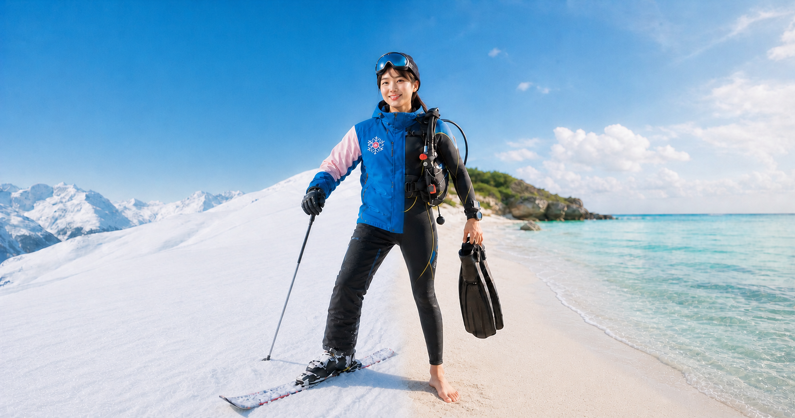
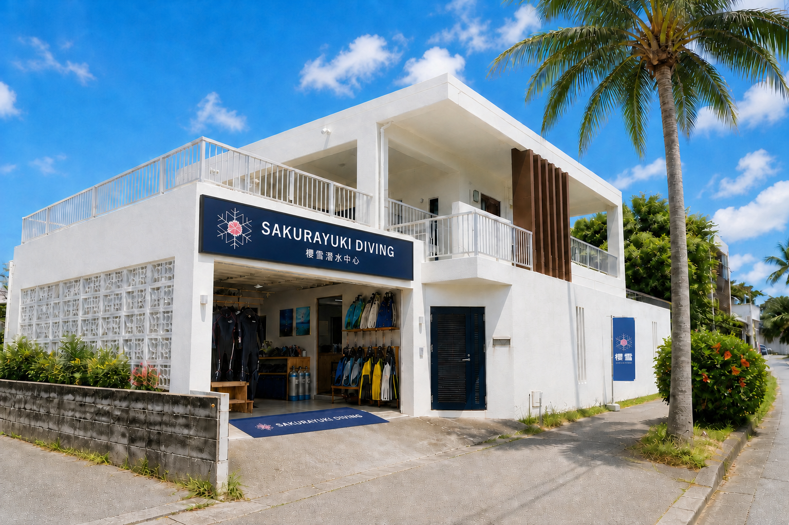
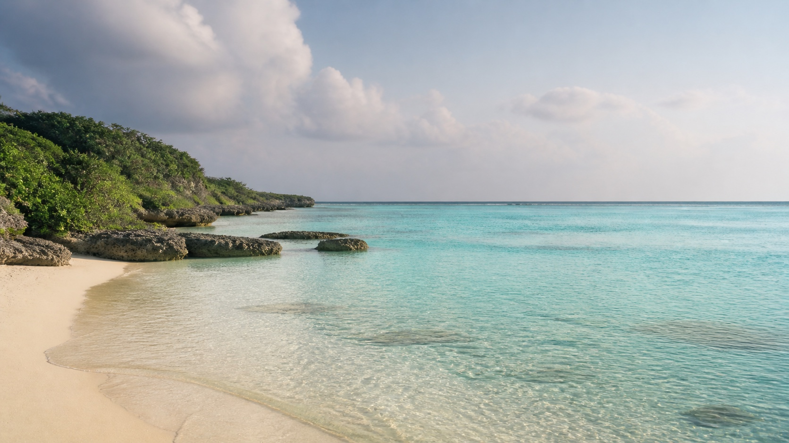
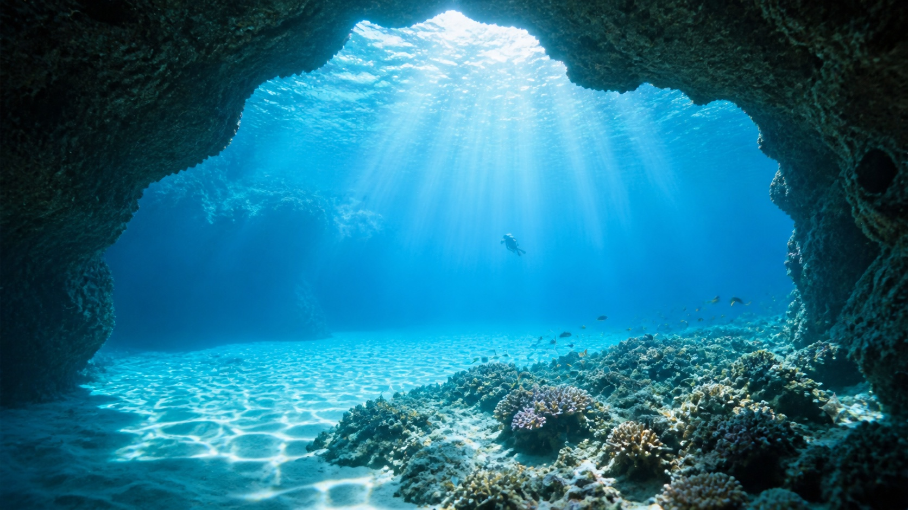
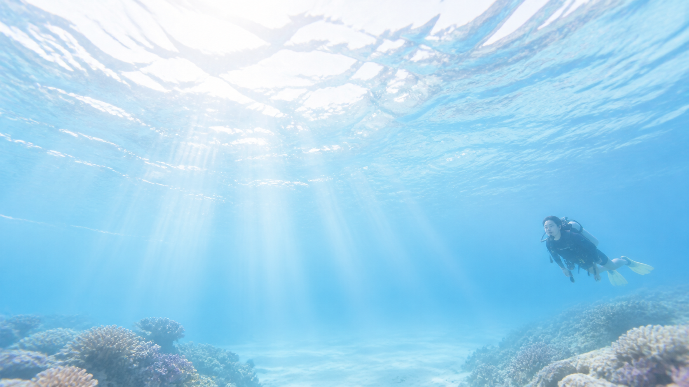
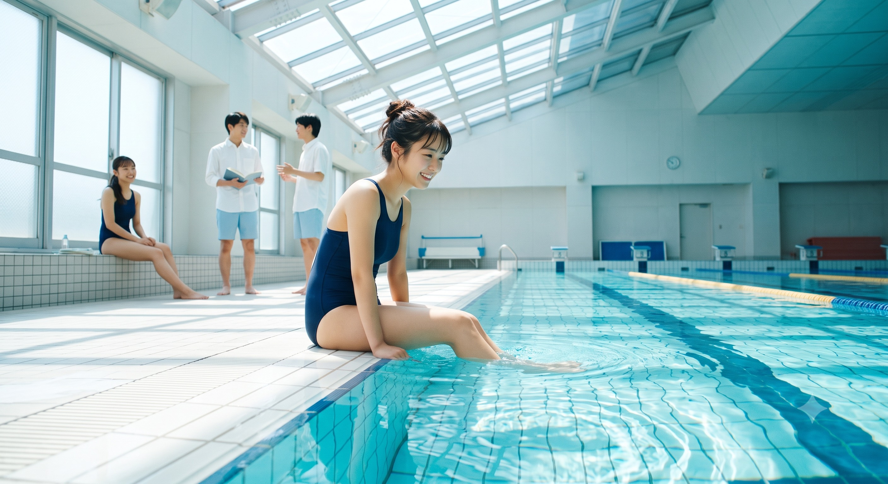

TAIPEI
平靜水域練習
全年恆溫泳池，依時間安排一個假日或兩個平日晚間。
SAKURAYUKI DIVING CENTER · OKINAWA
從台北泳池開始，跟著熟悉的教練，把第一次潛水、PADI 考證與海島旅行，變成一段輕鬆期待的夏日計畫。
ONE TEAM · FOUR SEASONS
櫻雪把熟悉的教學陪伴，從雪地延伸到水下。不是趕著拿證照，而是從台北開始練習，到龍洞或沖繩完成課程，按照你的節奏，一步一步安心下水。

PADI OPEN WATER DIVER
先在台北熟悉呼吸、裝備與水下動作，再到真正的海裡完成四支氣瓶。技能不是一次塞滿，而是讓身體慢慢記住。
全年恆溫泳池，依時間安排一個假日或兩個平日晚間。
面鏡排水、裝備操作與中性浮力，從熟悉環境延伸到開放水域。
在龍洞或沖繩完成四支氣瓶，取得全球通用的 PADI OW 證照。
THREE BASES · ONE JOURNEY


距離台北約一小時的成熟潛點，適合完成開放水域課程與在地練習。


OUR OKINAWA HOME
白色外牆、通風露台與整齊的裝備區，這裡不只是集合點，也是出發前喝口水、認識夥伴、聽教練說明當日海況的地方。
LIVE SEA CONDITIONS · OKINAWA BLUE CAVE
以真榮田岬為中心，查看恩納村周邊的洋流、浪況與風向。拖曳地圖可探索附近海域，時間軸則能查看接下來的變化。
教練與現場判斷優先。Windy 為預報模型視覺化，沿岸地形、湧浪、能見度與臨時管制仍可能快速改變，不可單獨作為下水或航行依據。
在 Windy 開啟完整地圖 ↗ISLAND MOMENTS
海面上的光、島上的風與旅行裡剛剛好的空白，都是潛旅的一部分。



CHOOSE YOUR ROUTE

GOOD TO KNOW
可以。重點是能在水中保持冷靜，課程也會循序練習水性與必要技巧。
可以配戴隱形眼鏡，或使用有度數的面鏡；報名時告訴我們度數即可。
沒有。PADI 潛水證照終身有效；若已有一段時間沒有潛水，建議先複習知識與技巧，再安心回到水下。
Open Water Diver 課程最低年齡為 10 歲；10–14 歲完成後取得 Junior Open Water Diver 資格。未成年學員須由家長或監護人同意，實際安排也會依水性、健康狀況與成熟度評估。
建議安排 5 天 4 夜，保留下水後禁止搭機的安全時間，也讓旅程不必匆忙。
不需要，課程包含所需潛水裝備；若已有個人裝備，可於報名時確認安排。
READY FOR THE BLUE?